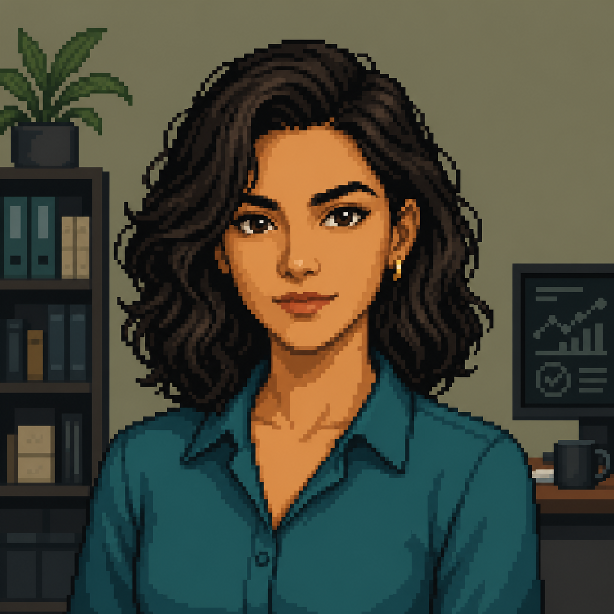
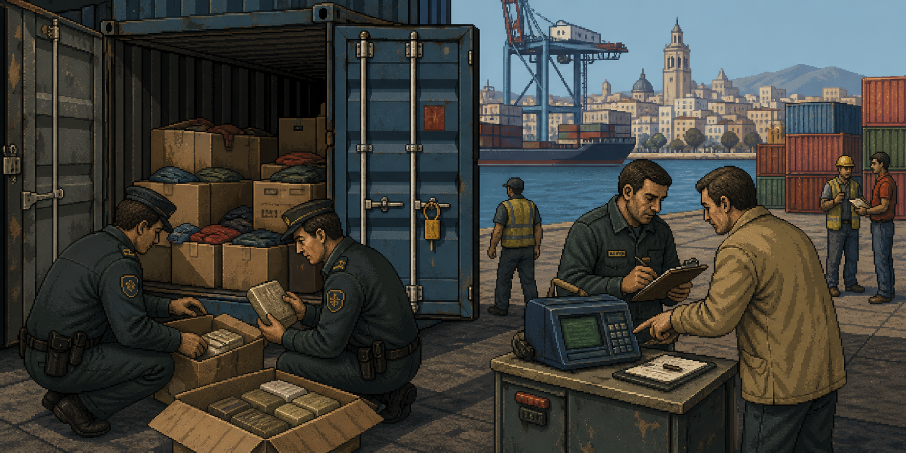

O erro
Um único caractere liga a mãe de Ana ao registro de outra pessoa.
DECISÕES AUTOMÁTICAS // RESPONSABILIDADE HUMANA
Toda decisão automática parece apenas um número. Para alguém, ela pode mudar uma vida inteira.
ARQUIVO PESSOAL 04

Ana Torres tinha dezessete anos quando a mãe perdeu o emprego. Depois de quase duas décadas na mesma empresa, Marta foi marcada por um sistema como funcionária de alto risco. O relatório dizia que o crachá dela havia acessado a fábrica durante três madrugadas.
A empresa confiou nos 98% de certeza apresentados pelo programa e ninguém conferiu os registros originais. Ana conferiu. Os dois códigos eram quase idênticos, mas o último caractere não era o mesmo. O sistema tinha juntado a história de duas pessoas diferentes.
O erro foi corrigido meses depois, tarde demais para devolver a tranquilidade que havia saído de casa. Ana decidiu então aprender como esses sistemas escolhiam, comparavam e erravam. Ela não queria impedir o uso da tecnologia. Queria garantir que alguém sempre pudesse fazer a pergunta que faltou naquele dia: os dados realmente batem?
Quando o uso de inteligência artificial começou a crescer mais rápido do que as regras para controlá-lo, ela reuniu uma pequena equipe e criou a Sob Análise. A empresa nasceu para revisar decisões automatizadas antes que um erro silencioso chegasse à vida de outra família.
“Uma máquina pode calcular uma decisão. A responsabilidade por ela continua sendo nossa.”
Um único caractere liga a mãe de Ana ao registro de outra pessoa.
Ana passa a estudar dados para entender como decisões automáticas são construídas.
Com o avanço acelerado da IA, ela cria a Sob Análise para auditar decisões de outras empresas.
SISTEMA DE AUDITORIA
No jogo, você acompanha Ana nos primeiros grandes contratos da Sob Análise. Outras empresas enviam decisões tomadas por inteligência artificial, e cabe a você descobrir se elas podem ser aprovadas, negadas, revisadas ou registradas como violação.
01 / 04
ROTINA DE TRABALHO
Entenda o que a inteligência artificial decidiu e quais dados foram usados.
Coloque os documentos na mesa e ligue informações que deveriam coincidir.
Escolha o carimbo adequado, assine o relatório e envie sua conclusão.
No fim do turno, o jornal mostra as consequências de cada escolha.
NOTICIÁRIO DO DIA
Uma carga liberada sem revisão, uma promoção negada pelo cadastro errado ou uma conta que esconde trabalho infantil: no jornal, cada decisão volta de forma exagerada, ácida e impossível de ignorar.
É ali que Ana e o jogador descobrem que uma pequena inconsistência na tela pode se transformar em uma consequência enorme fora dela.

PROJETO ACADÊMICO
Sob Análise é um jogo narrativo em pixel art desenvolvido para discutir decisões automatizadas, qualidade dos dados e responsabilidade humana. A inspiração vem de jogos de investigação documental, nos quais ler, comparar e desconfiar fazem parte da própria jogabilidade.